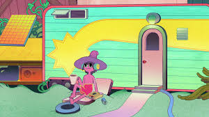

The Midnight Gospel
2020, TV-MA 1 Season
A space caster traverses trippy worlds inside his universe simulator, exploring existential questions about life, death and everything in between. Enjoy watching as he travels in order to speak about that which is philosophical and weird with many universal creatures.
Creators
Pendleton Ward, Duncan Trussell
Starring
Duncan Trussell, Phil Hendrie, Drew Pinsky
Genres
TV Comedies, Adult Animation